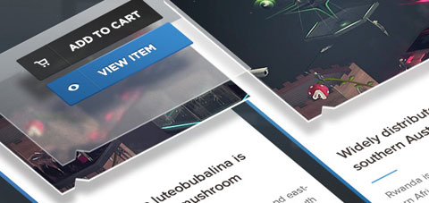

Kickstarting
app
development
Use Left & Right arrows for page navigation
Last Modified: Sep 2014
Yes you can!
You can start building apps right now if...
- You know HTML basics
- You know basics of JavaScript
- You have some idea with CSS
It's already live!
Organization
To develop any application, we worry about two things...
User Interface
Pages, Forms, Buttons, sliders...
& Controls!
Logic programming, loops, working with data etc...
Organization
While building apps, we
- build user interface with HTML & CSS
- & Javascript does the programming!
Let's Start!
Tools
- Any text editor (to write code)
- Firefox browser 26.0+ (to see output!)
Optionally (highly recommended):
Text Editor
Any text editor will work. We'll be making following types of files:
- HTML (.html)
- JavaScript (.js)
- CSS (.css)
You can use Sublime, Notepad++, Netbeans, Eclipse or even the basic editor which comes with your OS.
Firefox Browser
To see the complete functionality of your app, we'll use Firefox Browser - the desktop browser we all love.
We'll open the HTML files with our browser.
App Manager
App Manager comes built-in with Firefox 26.0+. App manager can be used to install Firefox OS simulator or to send apps to your device.
Tools > Web Developer > App Manager / about:app-manager
Simulator

Hello, World!
It's time for a Sample app, right now!
A Demo "Recipe" App
Step 1: Create a directory named Recipe
Create a directory named Recipe anywhere in your computer.
Step 2: Create file named index.html
Create a file index.html (it doesn't need to be index.html, it could be any name with .html extention) in the hello directory.

Step 3: Create Manifest file
All Firefox OS apps need a manifest file. The manifest file tells the app's name, description, permissions it requires and some other basic settings.
Manifest file can have any name, but it should have .webapp extension.
We create manifest.webapp file (note the .webapp extention) in hello directory:

More..
Install app in the simulator!
1. Open App Manager by typing about:app-manager in the address bar of browser
2. click Start Simulator > Firefox OS x.x from the bottom bar
3. Click Add Packaged App & select the folder which contains manifest.webapp file you just created.
4. Click update
Bingo! Go to the simulator & fine our app installed.
App in Firefox OS Simulator

More Fun: Add some scripts
We will add a text input box and a button in our simple app.
When user clicks button, an alert box with the text in the input field will be shown.
Change the index.html file
to add the input elements

Create a file named main.js
inside your project directory
// Refer to UI elements
var button = document.getElementById('myButton');
var txtInput = document.getElementById('myTextInput');
// Bind click event of the button with an event listener
button.addEventListener('click', function(){
var text = txtInput.value;
// Show alert box with this text
alert(text);
})


Congratulations!
You have created your first app!
Web API
3 Types of web API's
- Regular API'S
- Privileged API'S
- Certified API'S
Regular API's
- Battery Status API
- Notification API
- Screen Orientation API
- Vibration API
- Network Information API
- Alarm API
- Device Proximity API
- Ambient Light API
Privileged API's
- Device Storage API
- Contact API
- Browser API
Certified API's
- Web Telephony
- Web SMS
Publishing your app!
Firefox Marketplace

You can submit your app in the Firefox Marketplace for more publicity!
Sign in to Marketplace Developer Hub & follow the instructions!
Docs
Mozilla Developer Network (MDN)
MDN Will be your one-stop center for docs. You may also check out:
- HTML5
- JavaScript
- CSS Docs
Demos
Apps Showdown
Need inspiration? See some cool apps in action in the Demo Studio. You may also try the Marketplace from Simulator.